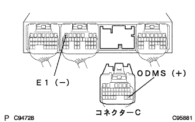

電子制御式オートマチツクトランスアクスル［ECT］システム（U340F） トランスミッションコントロールスイッチ系統 |
| 手順1 | TaSCANデータ読み取り（O/DカットSW） |
SST(TaSCAN)を使用して、画面表示に従って操作を行い、[ECUデータモニター]画面を表示させコンピュータデータを点検する。
| 項目名[記号] | 項目解説 | 点検条件 | 参考値 | 異常時の点検項目 |
|---|---|---|---|---|
| O/DカットSW [OD2] | T/MコントロールSWを表す | T/MコントロールSW 押す(禁止)→押す(許可) | OFF→ON | ODMS信号 |
|
| ||||
| NG | |
| 手順2 | トランスミッションコントロールスイッチ単体点検 |
トランスミッションコントロールスイッチのコネクターを切り離す。
 |
SST(トヨタエレクトリカルテスター)を使用して、端子間の導通を点検する。
| スイッチ | 導通 |
|---|---|
| 押した状態 | 導通あり |
| 離した状態 | 導通なし |
|
| ||||
| OK | |
| 手順3 | ワイヤハーネスおよびコネクター点検（トランスミッションコントロールスイッチ-エンジンコントロールコンピュータ） |
トランスミッションコントロールスイッチのコネクターを接続する。
|  |
エンジンコントロールコンピュータのコネクターCを切り離し、SST(トヨタエレクトリカルテスター)を使用して、C29(ODMS)←→B7(E1)端子間の導通を点検する。(端子配列は参照)
| スイッチ | 導通 |
|---|---|
| 押した状態 | 導通あり |
| 離した状態 | 導通なし |
|
| ||||
| OK | ||
| ||